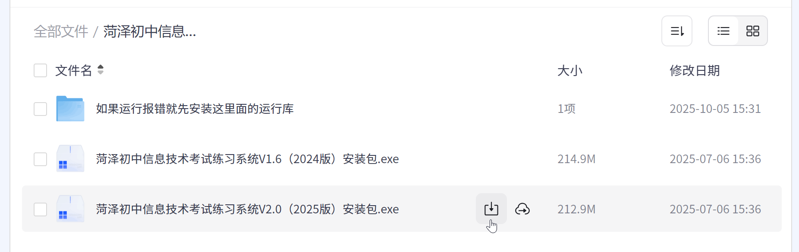
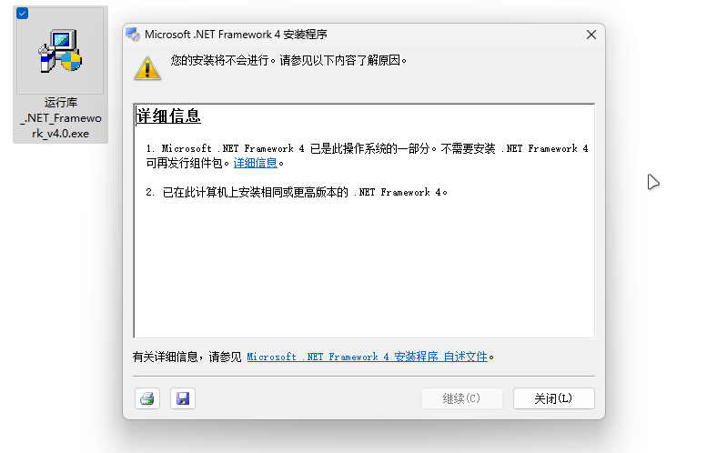
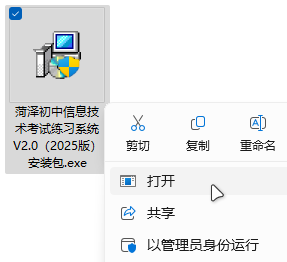
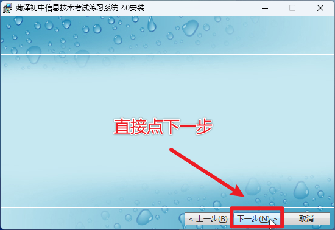
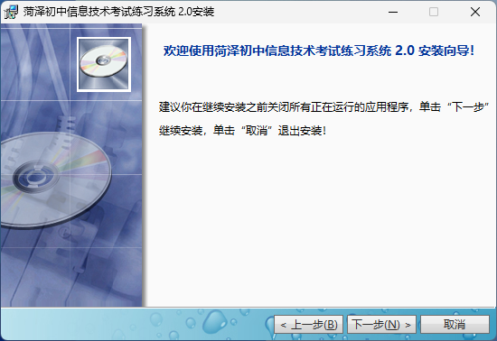
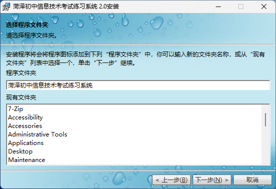
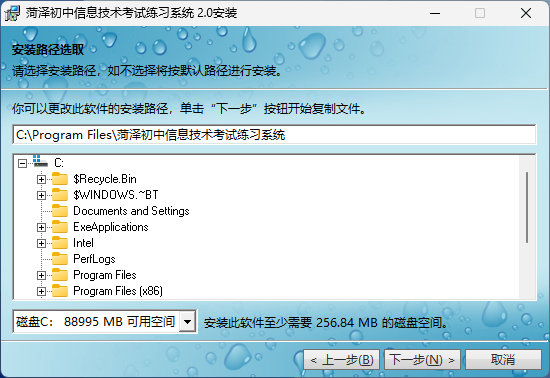
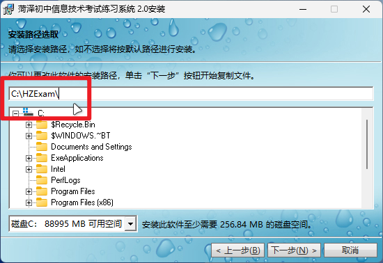
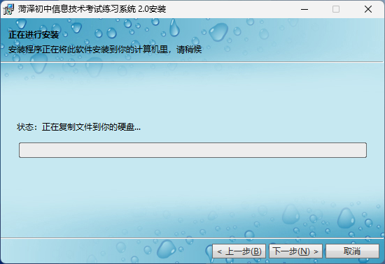
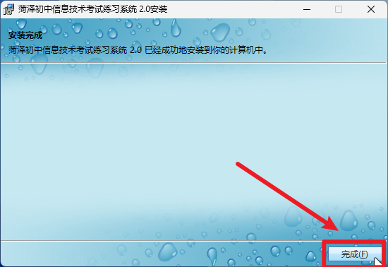

本教程同时适用于V1.6和V2.0版本
链接：https://pan.quark.cn/s/dc6e5bfabc37
链接：https://share.feijipan.com/s/xPXYomJ3

从网盘下载安装包
仅 Windows7 系统需要额外安装运行时环境。
对于 Windows10 和 Windows11 系统，可以跳过这一步。。
在网盘中找到 “如果允许报错就先安装这里面的运行库” 这个文件夹，下载里面的运行库软件，并双击运行安装。
下载运行库
由于我没有运行 Windows7 的电脑，故无法详细演示，一般一直点下一步安装即可。
安装完成后，再按下一小节的内容正常安装即可。
（如果你的电脑不是 Windows7，安装该运行库时会提示你系统中已存在集成组件，无需重复安装）

提示已存在组件，无需重复安装（截图取自 Windows11 系统）
下载完成后，双击运行安装程序，

运行安装程序（直接双击打开即可）
进入安装界面是空白纯背景界面，先点“下一步”，

直接点下一步

欢迎界面
后面到这个步骤，一般直接下一步即可

直接点下一步
然后就到了选择安装位置这一步

选择安装位置
这里需要注意：
对于Windows7：直接下一步即可（安装在C盘默认位置），也可以选择其他位置，十分自由。
对于Windows10 和 Windows11：不要安装在C盘默认目录，因为会引发 “生成考卷”报错 和 “答题文件不存在” 等问题，建议安装在其他盘符下（如D盘）。
如果你非要安装在C盘里面，不要安装在默认位置，请选择C盘其他位置。

例如手动输入路径：“C:\HZExam”
然后后面正常操作即可，点击“下一步”直到安装完成。

正在安装
安装完成后，点击“完成”

安装完成
至此，练习系统的主程序安装完成。
后面，你还需要安装配置其他依赖软件。
另外，如果你的电脑安装有问题，可以尝试使用免安装版。
（本章节结束）[下一章节]